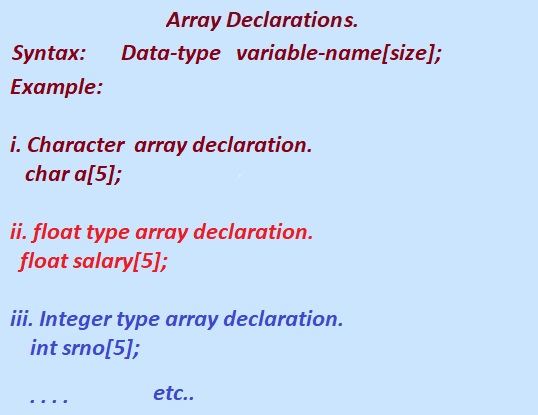

In this tutorial section we will learn how to declare 1D array in C Language?.
Let Start to Learn how to Declarare different types of array in C Language.
a. Integer Array.
b. Float Array.
c. Character Array.
Following is the Sysntax to Declare different type of one dimensional array in C language.
Syntax:
data_type arr_name[array_size];
We need to keep in mind the following rules while array declarations.
i. while Declaring an array they must have a data type(int, float, char, double, etc.), variable name, and subscript [].
ii. An array variable must be declared before being used in a program.
iii. The Size of the array is represented by the subscript [].
iv. If the size of a array is declared as 10, then programmers can store 10 elements.
v. Each array element in array is stored in a separate memory location.
vi. The index of an array in C language is always start from 0.
For example, if an array variable is declared as int n[10], then it ranges from 0 to 9.
C Language Array Declarations.
Example : Arrays Declaration in C programming
Example: int N[10];
The above declaration defines an array called N of size 10,
i.e., N can store 10 integer numbers in contiguous memory location. N Store 10 elements of same data type int. The elements occupy consecutive memory (contiguous) and forms an ordered set of elements. Each array elements can be identified by its position or index in the array, and is also referred as the subscript of the array. The first element is at the index position 0 and nth element can be found in the (n -1)th inex position.
The name of the array is N, which is the address of the first element (i.e. &N[0]) of the array.

Declaring Single or One Dimensional Array in C programming.
Given Diagram is for Declaring 1D Array of type char,float and int in C programming.
In C Programming Language we can declare the array like any other variable before using it in the Program.
Syntax of Array Declaration:
data_type array_name [size];
In the given diagram ,the first example
i. Character array declaration.
char a[5];
char is the data type of the array,a is the name of array and 5 is the size.
a, is the name of the character array followed by pair of opening and closing square brackets[]. Inside the square brackets , the 5 is size of the array and hold 5 character string.
finally ; is the semicolon that ends every statement in C programming.
Second example given in the next line,
ii. float type array declaration.
float salary[5];
float is the data type, salary is the name of the array and size of array is 5.
The array salary can hold 5 floating point numbers e.g 4569.98,4567.90 etc.
And in the last line of code,
iii. Integer type array declaration.
int srno[5];
int is the data types, and srno is the name of the array and 5 is the size of the array. It means array srno can only able to store 5 elements of int data type.
iv. double type array declaration.
double balance[5];
Here balance is a variable of type double which is sufficient to hold up to 5 double numbers.
1. Type and name of array pointer to character.
extern char *name[];
The Declaration given above is the type and name of an array of pointers to char.
2. Array of Structure.
struct
{
float salary,bonus;
}employee[10];
This is a declaration of an array of structures.
This array of structure employee[10] has 10 element; each element is the structure containing two members i.e salary and bonus.
/* Character array Declaration initialization program */
#include<stdio.h>
#include<string.h>
int main()
{
char vowels[]={'a','e','i','o','u'};
int c=puts(vowels); // print array.
if(c>0){
printf("\n Vowels Printed successfully");
}
printf("\n Length of Character array is= %d",strlen(vowels));
return(0);
}
output:
aeiou
Vowels Printed successfylly
Length of Character array is= 5
1. The puts() function is used to print a character string or array to the output.
The prototype of puts() function is available in string.h header file.
2. The strlen() function is present in string.h header file and is used to find the length of a string.
Previous Topic:-->> 1D Array in C || Next topic:-->>Initialize 1D Array in C.
Other Topics:
while oop do while loop for loop